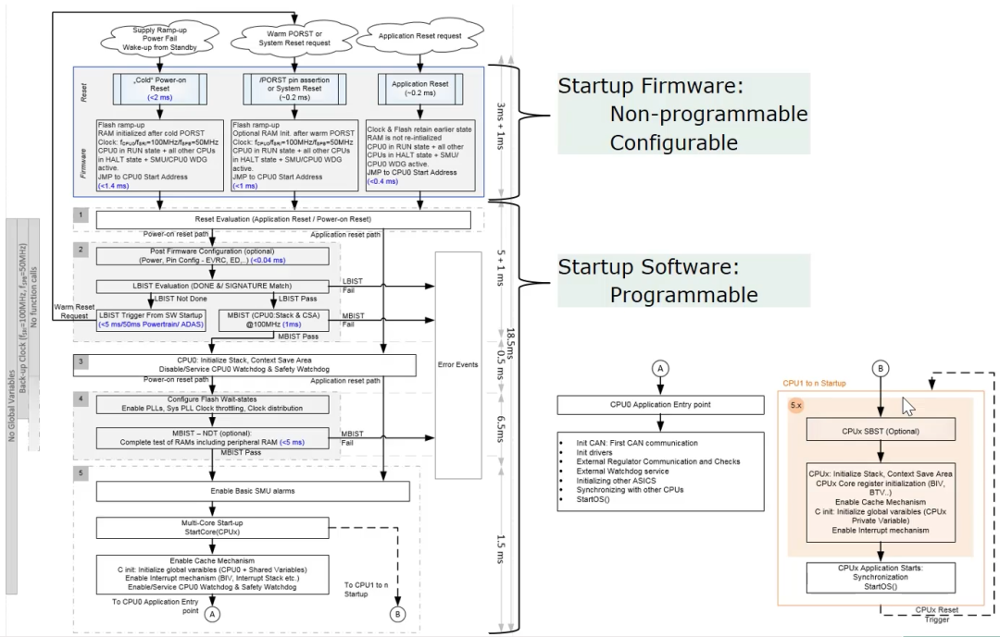
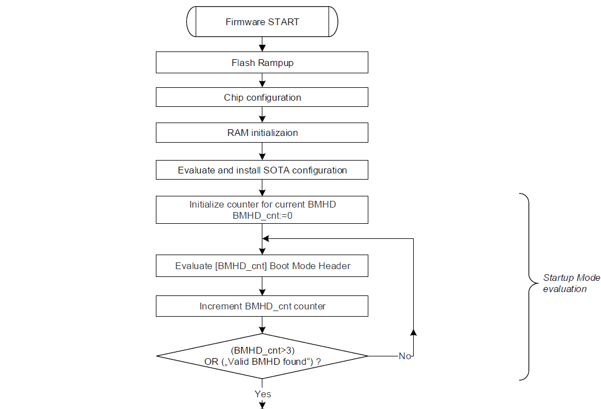
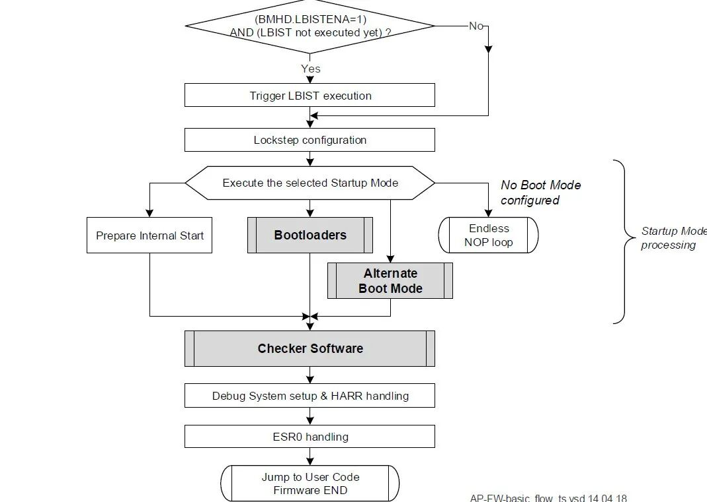
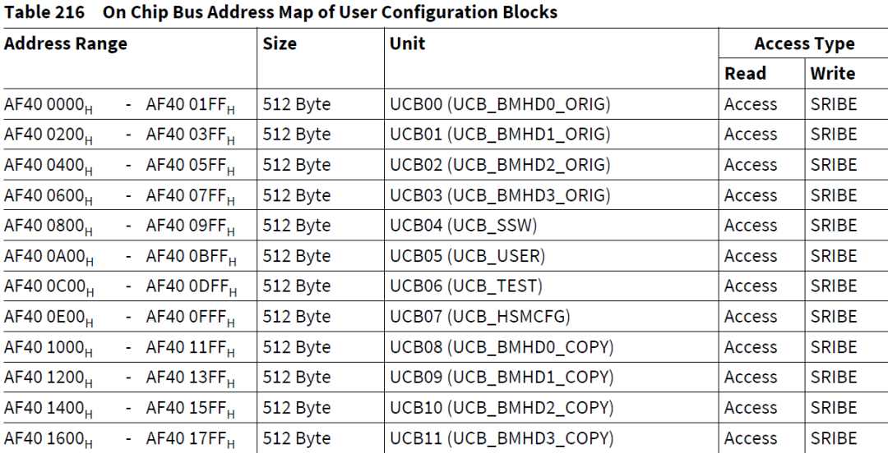
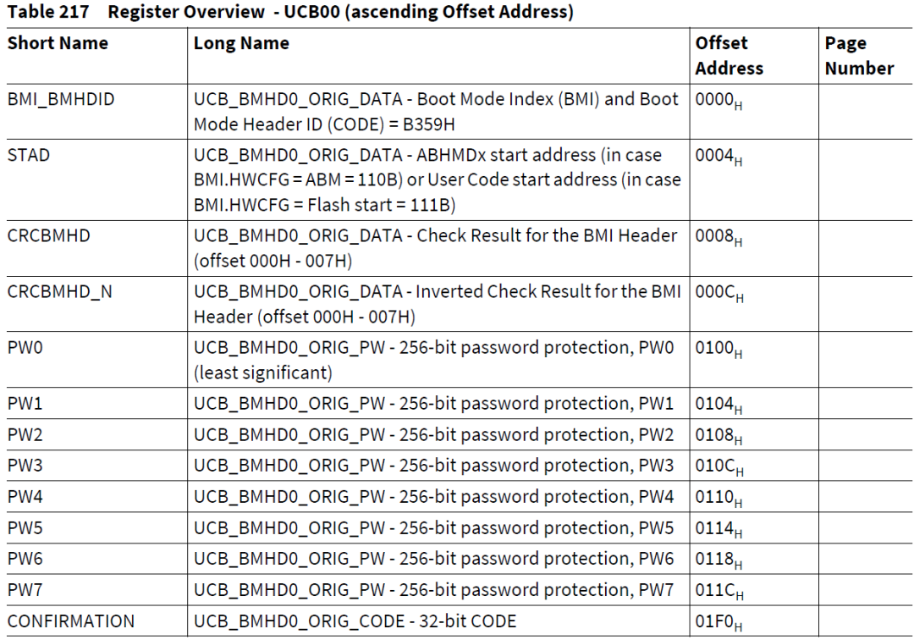
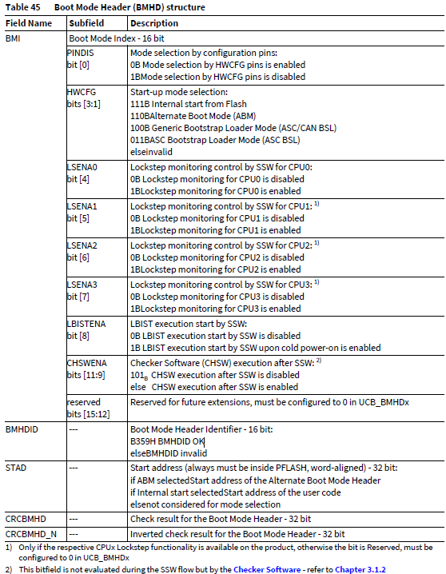
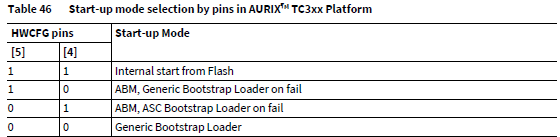
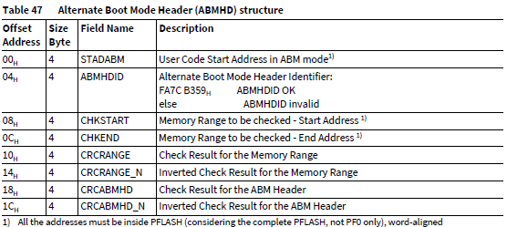
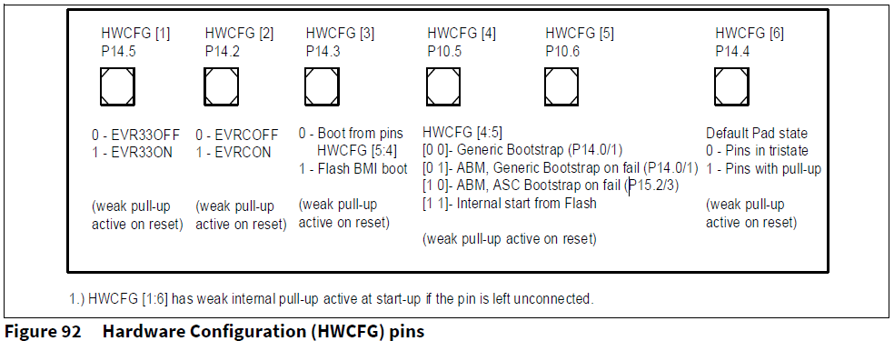
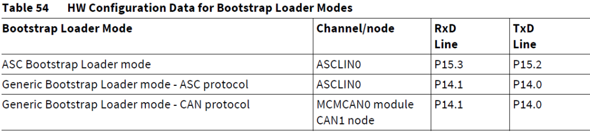

开心果 Need Car · 2025-07-16T06:33:00+08:00 · 微信原文
软件开发过程中，很多时候，我们大都关注用户程序的启动地址，很少关注芯片CPU如何找到用户启动地址，本文聚焦一下用户启动地址以及芯片启动模式选择的安全问题。
1、TC3xx启动流程
TC3xx系列单片机固件（Platform Firmware）的启动流程包括SSW（Startup Software）和CHSW（Checker Software ）。SSW是英飞凌厂商固化在BootROM中的程序，芯片上电最先执行的部分。SSW不可编程（Non-programmable），但是可以通过UCB（User Configuration Block，用户配置块）修改用户配置信息，进而影响芯片的启动行为，eg：是否执行SWAP功能，是否使能HSM功能等等。注意：SSW由CPU0执行，其他CPU处于Halt状态。固件启动流程示意如下(1)：

如上图可以看出，在执行用户程序（eg：用户的Bootloader程序）之前，需要花费一定的时间执行固件程序。在这个流程结束之后，会根据用户选择的启动模式，决定去哪块内存区执行用户程序。如果启动模式设置不当，就存在锁板的风险。
（一）固件启动主流程
固件启动主流程示意如下：


如上图，在“Startup Mode evaluation”阶段，固件会检查BMHD（Boot Mode Header）有效性。TC3xx系列芯片中，BMHD一共有8个，4个ORIG和4个COPY，对应的UCBx及地址，如下所示：







往期精彩回顾
参考资料
(1)https://www.cnblogs.com/huaiquanzhang/articles/18243027